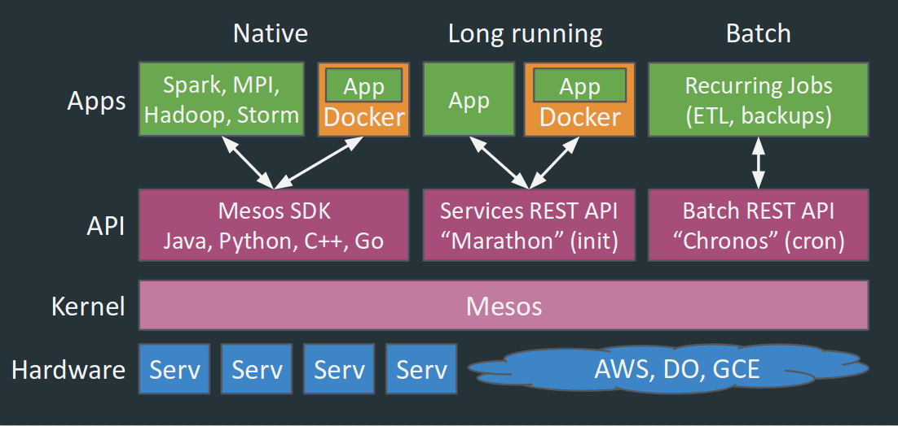

Apache Mesos
+ Apache YARN
= Myriad
|
Myriad Project Lead |
|
|
Apache Mesos Committer |
Agenda
- What's up with Datacenters these days?
- Apache Mesos vs. Apache Hadoop/YARN?
- Why would you want/need both?
- Introducing Apache Myriad
What's running on your datacenter?
- Tier 1 services
- Tier 2 services
- High Priority Batch
- Best Effort, backfill
Requirements
- Programming models based on resources,
not machines
- Custom resource types
- Custom scheduling algorithms:
Fast vs. careful/slow
- Lightweight executors, fast task launch time
- Multi-tenancy, utilization, strong isolation
- Preemption/oversubscription, fault-tolerance
not machines
Fast vs. careful/slow
Hadoop and More
- Support Hadoop/BigData ecosystem
- Support arbitrary (legacy) processes/containers
- Connect Big Data to non-Hadoop apps,
share data, resources
share data, resources
Mesos from 10,000 feet
Open Source Apache project |
|
Cluster Resource Manager |
|
Scalable to 10,000s of nodes |
|
Fault-tolerant, no SPOF |
|
Multi-tenancy, Resource Isolation |
|
Improved resource utilization |
Mesos is more than
Yet Another Resource Negotiator
Long-running services; real-time jobs |
|
Native Docker; cgroups for years; |
|
Distributed systems SDK; |
|
Core written in C++ for performance, |

Mesosphere DCOS

Why two resource managers?
Static Partitioning sucks
- Hadoop teams fine with isolated clusters,
but Ops team unhappy; slow to provision - Resource silos, no elasticity
- Want to run Hadoop on the same infrastructure,
without interrupting Tier-1 services - Want multi-tenancy, resource sharing/isolation


YARN on the fly
- Quick dev/QA clusters; compatibility testing
- YARN doesn't run YARN well, Mesos does
- Fault-tolerance: Run RM on Marathon, auto-restart on another node
Multiple YARNs
- Multiple isolated YARN clusters:
different versions, dev/test/prod - YARN version upgrade, workload migration
- Scale up new YARN cluster, scale down old
- Same data layer (HDFS)
Resource Slosh
- Web servers, data ingestion: write to HDFS
- Followed by periodic Hadoop analytics,
write to HDFS/HBase - Which may feed back into the webserver
- Different needs over time, dynamically adjust
Myriad Overview
- Makes YARN (Yet Another) Mesos Framework
- Mesos manages DC, YARN manages Hadoop
- Get resources from Mesos, scale YARN
- Reclaim YARN resources, give back to Mesos
History of Myriad
Mohit Soni from eBay builds prototype, presents at MesosCon |
|
Santosh Marella from MapR |
|
Adam introduces Mohit and Santosh, both prototypes merged together |
|
Myriad accepted into Apache Incubator March 1, 2015 |
Features in Progress
- Fine-grained scaling
- Myriad scheduler HA, task reconciliation
- Distribution of hadoop binaries
- Dockerization
- Upcoming: Multiple isolated YARN clusters
- Upcoming: Data locality optimizations
Myriad improves Mesos
Tighter integration with Hadoop frameworks like HBase, Hive, Pig |
|
Borrow resources from Hadoop |
|
Backfill unused resource capacity |
|
No Mesos code changes necessary |
Myriad improves Hadoop
Elastic scaling |
|
Fault-tolerant: Maintain NM capacity |
|
Share resources with other workloads, |
|
Multiple isolated Hadoop clusters |
|
No YARN/Hadoop code changes |
Apache Incubator Podling Update
- Done: Proposal, Status page, mailing lists
- Mentors: benh, tdunning, danese, lresende
- Committers: Mohit, Santosh, me, KenSipe
- Legal: Naming, donation, CLAs
- INFRA: git repo (empty), JIRA, website, wiki
- Release: version, vote, ShipIt!
- Community: more users, committers
Learn More!
 |
Apache Myriad Incubator Proposal Apache Myriad Incubator Status Page |
 |